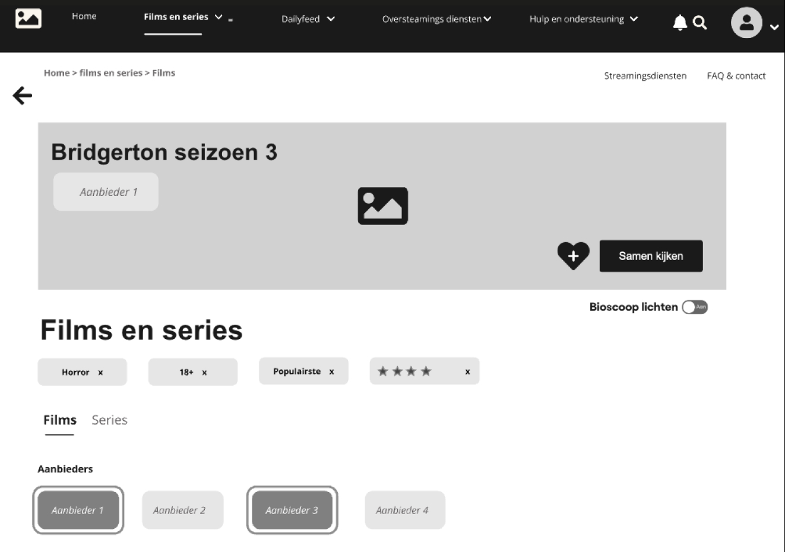
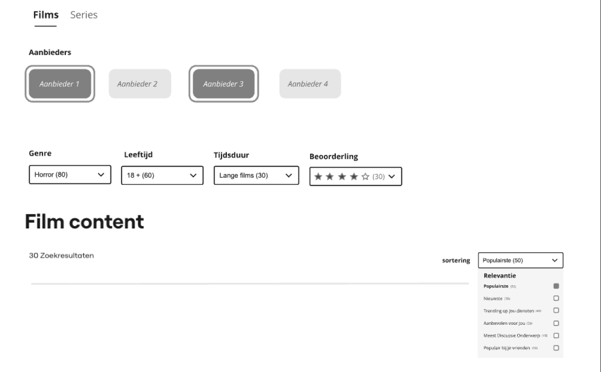
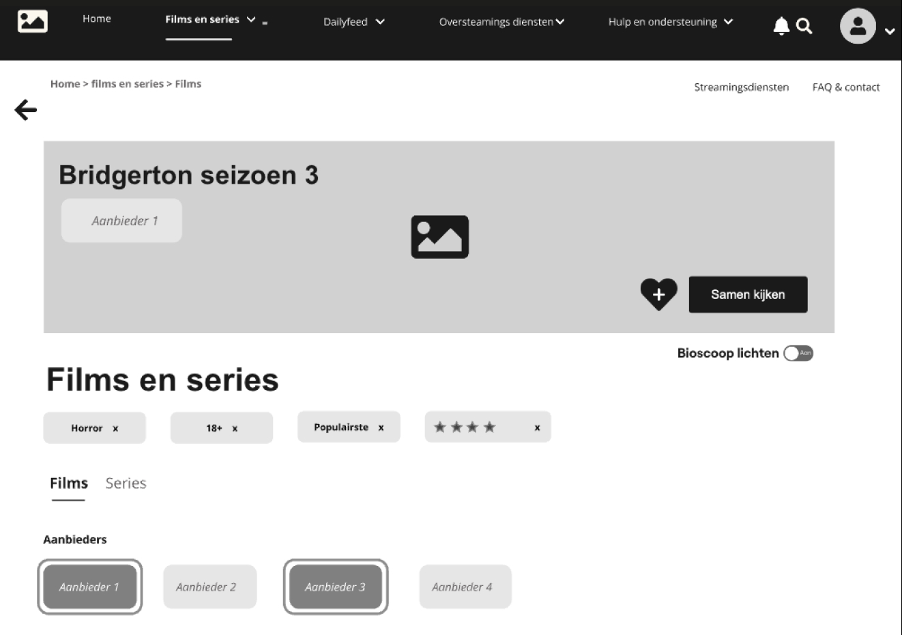
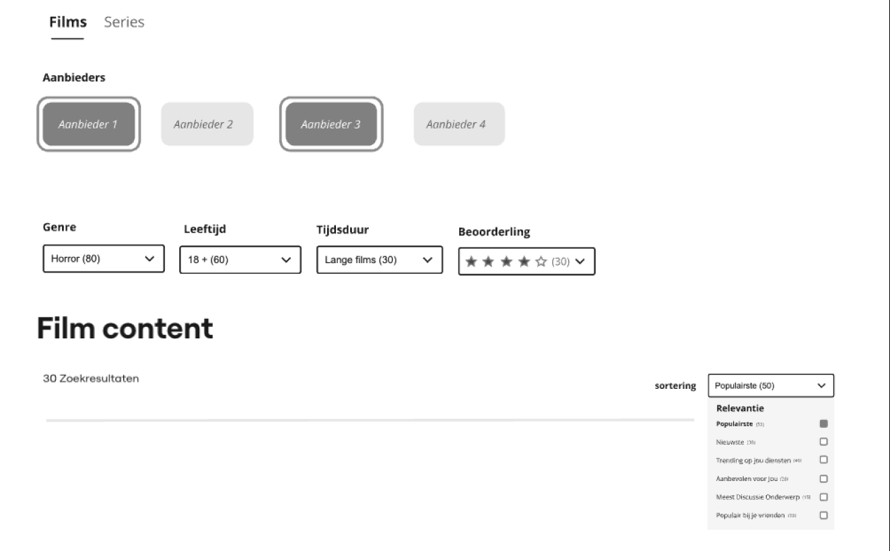

Bingin
Voor Bingin heb ik een high-fi website die gebruikers helpt om optimaal van streaming video’s te genieten, heb ik een uitgebreide informatiearchitectuur ontwikkeld.
over de opdracht
De kernfunctionaliteit omvat het vinden van videocontent van verschillende aanbieders zoals Netflix, Prime Video, HBO en Disney+, en het gezamenlijk bekijken van films en series. Mijn deliverables waren geannoteerde wireframes, een flowchart, een user journey met nieuwe functionaliteit en een sitemap met een homepage-ontwerp.
probleem statement
Bingin’ wil gebruikers ondersteunen bij het vinden en gezamenlijk kijken van streaming videocontent zonder zelf video’s af te spelen. De uitdaging lag in het ontwerpen van een intuïtieve en uitgebreide gebruikersinterface die diverse zoekstrategieën, filter- en sorteermogelijkheden biedt, evenals een gebruiksvriendelijke samenkijkervaring.
Mijn rol
- UI-design
- Conceptontwikkeling
- Interfaceontwerp
- functioneel onwtwerp
- Huistijl
- Substijl
- Doelgroepgericht
- Gebruikerservaring
extra functie
Een van de belangrijkste toevoegingen aan Bingin is de mogelijkheid om scènes tijdens het kijken van een film of serie te pinnen. Gebruikers kunnen deze scènes bewaren om ze later met vrienden te bespreken. Na het kijken kunnen gebruikers naar een gezamenlijke chat gaan, waar de gepinde scènes teruggehaald en in de groepsapp geplaatst kunnen worden. Een vraag verschijnt groot bovenaan het scherm, zodat iedereen mee kan praten en zijn of haar mening kan geven. Daarnaast biedt Bingin de mogelijkheid om een kennisquiz of andere mini-games te spelen binnen de chat. De chat, inclusief alle gesprekken en activiteiten, kan ook worden opgeslagen. Deze nieuwe functionaliteit verbetert de betrokkenheid en het sociale aspect van gezamenlijk streamen, wat aansluit bij de behoeften van de gebruikers.
Demo
Bekijk een live demo van de website of bekijk de code op GitHub:
Live Demo Bekijk op GitHubAfbeeldingen van het project
 


